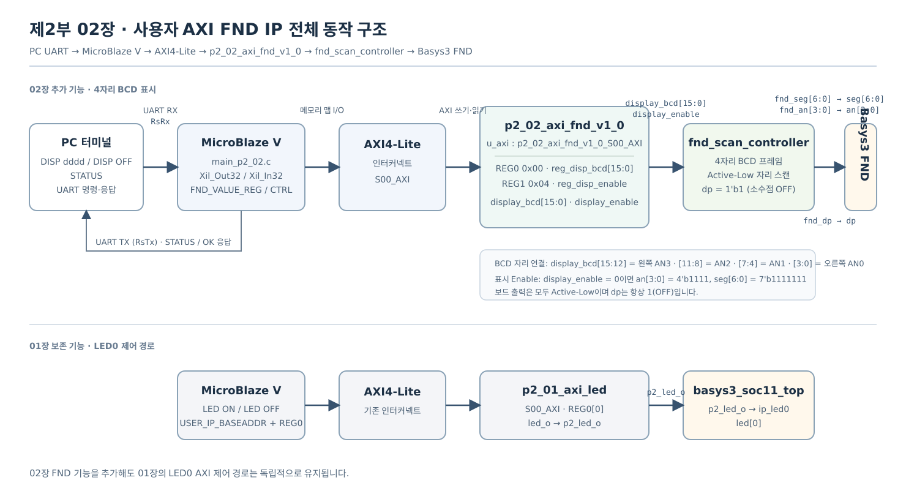

제2부 02장 · 사용자 AXI IP로 FND 4자리 표시
01장 LED0 제어를 유지하고, FND 4자리 표시를 AXI 레지스터와 독립 RTL 스캔 모듈로 추가합니다.
MicroBlaze V → AXI4-Lite → FND 표시 레지스터 → fnd_scan_controller → Basys3 FND
1. 과제 개요
제2부 01장의 AXI LED0 제어를 유지하면서, 새로운 AXI4-Lite FND IP를 추가해 Basys3 내장 4자리 FND를 제어합니다. PC에서 UART 명령을 입력하면 MicroBlaze V가 표시값을 레지스터에 기록하고, FPGA의 독립 RTL 모듈이 네 자리를 반복 스캔합니다.
입력·출력 정의
| 구분 | 신호·명령 | 역할 |
|---|---|---|
| 외부 입력 |
RsRx
|
PC 터미널에서 수신하는 UART 명령: DISP 1234, DISP 0050, DISP OFF, STATUS, LED ON/OFF
|
| 기존 입력 |
clk, btnC, sw[15:0]
|
시스템 클록·리셋·스위치 연결 유지 |
| CPU → FND IP |
FND_VALUE_REG (0x00), FND_CTRL_REG (0x04) |
BCD 네 자리 값과 표시 ON/OFF 기록 |
| 신규 보드 출력 |
seg[6:0], an[3:0], dp
|
FND 숫자 획·자리 선택·소수점 제어. 모두 Active-Low |
| 기존 보드 출력 |
led[15:0]
|
LED0은 제1장 사용자 AXI IP, LED1~15는 기존 GPIO 배선 |
| UART 응답 |
RsTx
|
명령 처리 결과와 레지스터 읽기값을 PC로 전송 |
동작 구조
PC UART 명령 → MicroBlaze V → AXI4-Lite → FND REG0/REG1
↓
fnd_scan_controller
↓
seg[6:0] · an[3:0] · dp
기존 LED ON/OFF → 기존 P2-01 AXI LED IP → LED0

동작 예: DISP 0050 입력 → REG0에 0x0050 기록 → REG1 bit0 활성화 → 왼쪽부터 0050 표시. DISP OFF는 FND만 소등합니다.
완성 후 동작
PC 터미널에서 DISP 0050을 입력하면 FND 네 자리가 0050을 표시합니다. 앞자리 0도 생략하지 않습니다. DISP OFF는 FND만 소등하고 LED0은 유지합니다.
| 명령 + Enter | AXI 레지스터 변경 | FND 결과 | UART 예상 응답 |
|---|---|---|---|
DISP 1234
|
REG0 ← 0x1234, REG1 bit0 ← 1 |
1234 |
OK DISP=1234 ...
|
DISP 0050
|
REG0 ← 0x0050, REG1 bit0 ← 1 |
0050 |
OK DISP=0050 ...
|
DISP OFF
|
REG1 bit0 ← 0; REG0 유지 | 네 자리 모두 소등 |
OK DISP=OFF VALUE=0050 ...
|
STATUS
|
기존 LED IP와 신규 FND IP 읽기 | 변화 없음 |
STATUS LED=... / STATUS DISP=...
|
LED ON / LED OFF
|
기존 P2-01 LED IP 제어 | FND 값 유지 | 기존 LED 상태 응답 |
CPU → AXI → FND 스캔 구조
CPU는 표시 숫자를 설정하고, RTL은 각 자리의 켜짐 시간을 반복 제어합니다. MicroBlaze V가 자리마다 일일이 켜고 끄는 방식이 아닙니다. 따라서 CPU가 UART 입력을 기다리는 동안에도 FND 스캔은 계속됩니다.
FND 4자리·Active-Low·BCD
Basys3 내장 7-Segment(세븐 세그먼트, 숫자 표시 장치)의 seg[6:0]은 a~g 획의 제어선, an[3:0]은 자릿수 선택선입니다. 0일 때 활성(Active-Low)이며, an[0]은 오른쪽 끝, an[3]은 왼쪽 끝입니다.
| 표시값 | 자리3 / AN3 | 자리2 / AN2 | 자리1 / AN1 | 자리0 / AN0 |
|---|---|---|---|---|
1234
|
1 | 2 | 3 | 4 |
0050
|
0 | 0 | 5 | 0 |
DISP OFF
|
OFF | OFF | OFF | OFF |
16'h0050은 네 자리 BCD 값입니다. 16진수 0x0050의 네 니블이 각각 십진 숫자 0·0·5·0에 대응합니다. 0050을 정수 50으로 바꾸어 앞자리 0을 버리지 않습니다.
기본 FND_SCAN_TICKS=100000에서 AXI 클록이 실제 100 MHz인 경우에 한해 자릿수 선택 간격은 1 ms, 각 자리는 초당 250회 재점등됩니다. AXI 클록이 다르면 실제 주파수를 확인한 후 이 파라미터를 변경합니다.
AXI 레지스터와 CPU 메모리 맵
| Offset | 기호 | 쓰기 | 읽기 / 리셋 |
|---|---|---|---|
0x00
|
FND_VALUE_REG / REG0 |
하위 16비트: BCD d3,d2,d1,d0 | 입력한 BCD / 0x00000000
|
0x04
|
FND_CTRL_REG / REG1 |
bit0: 1=표시, 0=소등 | 현재 enable / 0
|
0x08
|
REG2 (예약) | 쓰기 SLVERR
|
0 읽기 |
0x0C
|
REG3 (예약) | 쓰기 SLVERR
|
0 읽기 |
REG0/REG1은 정상 주소에 대해 WSTRB(바이트 쓰기 선택)를 따릅니다. 잘못된 주소는 SLVERR 응답을 돌려줍니다. Base Address는 예시를 복사하지 않고 신규 Address Editor 및 BSP xparameters.h에서 확인합니다.
DISP 0050 → Xil_Out32(FND_IP_BASEADDR + 0x00, 0x00000050) → Xil_Out32(FND_IP_BASEADDR + 0x04, 0x00000001) → fnd_scan_controller : AN3=0, AN2=0, AN1=5, AN0=0
선행 조건 및 유지·변경 파일
| 구분 | 유지 | 추가·변경 |
|---|---|---|
| 프로젝트 | 제1부 11장 원본 soc11_user_top; 제2부 01장 soc_ip_design_01
|
별도 복제 soc_ip_design_02
|
| 기존 기능 | MicroBlaze V, BRAM, UART, GPIO, Timer, INTC, P2-01 LED IP | 신규 FND AXI IP + 재사용 RTL |
| 보드 신호 |
clk, btnC, sw, led, RsRx, RsTx
|
seg[6:0], an[3:0], dp
|
| Vitis | P2-01 문자열 명령 체계 | FND 명령 처리 코드 추가 |
01. 01장 프로젝트 복제
- Vivado에서
soc_ip_design_01.xpr을 엽니다. -
File → Project → Save As에서 프로젝트 이름
soc_ip_design_02, 저장 위치~/soc/hw/를 지정합니다. - 새 프로젝트의 XPR, Block Design, 사용자 Top, 01장 AXI LED IP를 확인합니다.
# 신규 프로젝트 XPR이 원본을 직접 참조하는지 확인
XPR="$HOME/soc/hw/soc_ip_design_02/soc_ip_design_02.xpr"
grep -nE 'soc_ip_design_01|soc11_user_top|soc11_integration.bd|basys3_soc11_top.v' "$XPR"
grep -nE: 경로 문자열을 검색하고 해당 줄 번호를 표시한다. 원본 이름이 파일 이름의 일부로 남아 있는 것과 원본 폴더의 절대 경로를 참조하는 것은 구분한다.
02. FND RTL 독립 모듈 이해·준비
- 자료
rtl/fnd_scan_controller.v - 소스의
display_bcd[15:0],display_enable,seg,an,dp포트와 시뮬레이션 파일을 먼저 확인한다. -
확인: 숫자 0~9의 Active-Low 세그먼트 패턴,
an[0]오른쪽 자리,dp=1을 확인한다.
03. 사용자 AXI4-Lite IP 생성
-
Tools → Create and Package New IP → Create a new AXI4 peripheral -
Name: p2_02_axi_fnd, Version1.0, Location: 신규 프로젝트의ip_repo, InterfaceS00_AXI, TypeLite, ModeSlave, Data Width32, Number of Registers4를 선택하고Edit IP로 이동한다. -
확인: IP 이름·버전·AXI 포트가 표시되며
p2_02_axi_fnd_v1_0.v및..._S00_AXI.v가 생성된다.
AMD UG1118의 Create New AXI4 Peripheral 절차를 준용합니다. 실제 Vivado 2024.2의 버튼 위치·생성 경로는 이후 GUI 실습에서 확인합니다.
04. AXI Slave와 IP Top 소스 반영
- IP 편집 프로젝트의
Sources → Design Sources - 자동 생성된 두 파일의 백업을 신규 프로젝트 안에 보관한 후 자료의
p2_02_axi_fnd_v1_0.v,p2_02_axi_fnd_v1_0_S00_AXI.v전체 내용과 대조해 반영한다.fnd_scan_controller.v를Add Sources → Add or Create Design Sources로 추가한다. -
확인: 모듈명·
S00_AXI인터페이스·fnd_seg/an/dp3개 출력이 일치한다.
05. RTL·AXI 시뮬레이션
- Ubuntu 터미널 또는 Vivado
Simulation Sources -
tests/run_rtl_tests.sh를 실행한다. 필요한 경우 Ubuntu에iverilog와vvp를 설치한다. Vivado Simulator에서 두 TB를 별도 최상위로 돌려도 된다. -
확인: 두 테스트에서 각각
FND_SCAN_TB PASS,AXI_FND_TB PASS가 출력되어야 한다.
# RTL 테스트 실행 환경: Ubuntu
sudo apt update # 패키지 목록 새로고침
sudo apt install -y iverilog # Icarus Verilog 설치
cd <압축을_푼_02장_폴더> # 실제 경로로 대체
bash tests/run_rtl_tests.sh # 독립 FND + AXI TB 실행
06. IP 재패키징 및 신규 프로젝트에 등록
- IP Packager →
Ports and Interfaces→Review and Package - 표시된 세 출력
fnd_seg[6:0],fnd_an[3:0],fnd_dp및FND_SCAN_TICKS를 확인한다. 필요 시 포트 변경 내용을 갱신(Merge changes)하고 Re-Package 한다. 신규 SoC 프로젝트에Settings → IP → Repository에서 새 IP 폴더를 등록한다. -
확인: IP Catalog에서
p2_02_axi_fnd검색 가능, 출력 3개 확인.
07. Block Design에 새 AXI IP 연결
-
Open Block Design → Add IP → p2_02_axi_fnd - 새 IP를 추가하고
Run Connection Automation으로S00_AXI를 기존 AXI 인터커넥트에 연결한다.s00_axi_aclk·s00_axi_aresetn이 해당 AXI 인터페이스 도메인과 일치하는지 확인한다. - 확인: AXI 연결에 경고가 없고 IP의 FND 출력 3개가 BD에 표시된다.
08. FND 출력 외부화·주소 할당
- BD FND 신호 우클릭
Make External/Address Editor - 세 포트를 외부화하고 외부 포트 이름을 반드시
fnd_seg,fnd_an,fnd_dp로 정한다. Address Editor에서 FND의 비중복 Base Address/Range를 할당한다. P2-01 LED IP 주소와 다름을 확인한다. -
확인:
fnd_seg[6:0],fnd_an[3:0],fnd_dp와 FND 주소 세그먼트가 보인다.
09. Wrapper 재생성 후 사용자 Top 변경
-
Validate Design → Generate Output Products → Create HDL Wrapper - Vivado 관리 Wrapper를 재생성한 후 실제
soc11_integration_wrapper.v선언부에fnd_seg,fnd_an,fnd_dp,p2_led_o가 있는지 확인한다. 확인이 끝나면rtl/basys3_soc11_top_p2_02.v를 신규 프로젝트의 사용자 Top에 반영한다. -
확인: Top 포트
seg[6:0],an[3:0],dp가 Sources 최상위에 보인다.
10. XDC에 FND 전용 핀 추가
- 신규 프로젝트
Constraints → *.xdc -
rtl/basys3_fnd_only.xdc의 12개 PACKAGE_PIN과 LVCMOS33 설정을 복사하여 신규 XDC에 추가한다. 기존 clk, Reset, LED, UART 핀 정의는 변경하지 않는다. -
확인:
seg[0..6],dp,an[0..3]가 각각 한 번만 제약된다.
11. 합성·타이밍·XSA 내보내기
-
Validate Design → Run Synthesis → Run Implementation → Generate Bitstream → Export Hardware - Elaborated Design에서 포트·XDC·클록 제약을 확인한다. DRC/Timing을 확인하고 Bitstream이 생성되면
File → Export → Export Hardware에서 Bitstream 포함 XSA를 신규 프로젝트용으로 내보낸다. - 확인: 새 XSA가 P2-02 Bitstream과 대응하고 WNS/TNS·Critical Warning 기준을 만족한다.
12. 새 Platform/BSP 확인
-
Vitis Unified IDE 2024.2 → Create Platform Component - P2-02에서 새로 생성한 XSA를 선택하여 새 Platform을 빌드한다. 생성된
xparameters.h를 열어 기존 UART Lite, LED 사용자 IP, FND 사용자 IP 각각의 Base Address를 확인한다. - 확인: UART Lite, 01장 LED IP, 02장 FND IP가 서로 다른 주소로 정의된 것을 확인한다.
13. C Application에 전체 소스 적용
-
Application Component → Sources → main.c -
sw/main_p2_02.c를 전체 반영한다. 상단USER_IP_BASEADDR와FND_IP_BASEADDR의0xFFFFFFFFU를 실제 BSP·Address Editor의 값으로 바꾼다. 컴파일 후 UART 수신과 FND 명령을 확인한다. -
확인: 잘못된 주소가 그대로면 의도한
#error에서 빌드가 중단된다. 올바른 주소일 때만 Build 진행.
14. C 코드 실행 플로우차트
read_command_line()은 Enter까지 한 줄을 조립합니다. handle_command()가 문자열을 비교하며, 명령에 따라 AXI 레지스터에 값을 쓰거나 읽습니다. 오타나 비정상 문자는 레지스터에 기록하지 않습니다.
15. UART 터미널에서 결과 비교
- Ubuntu
minicom/moserial등의 UART 터미널 - USB-UART를
115200 baud / 8 data bits / no parity / 1 stop bit / no flow control로 설정하고DISP 1234,DISP 0050,STATUS,DISP OFF,LED ON을 차례로 입력한다. - 확인: FND 실제 4자리 / 소등과 UART 레지스터 응답이 표의 기대값과 일치한다.
DISP 1234
OK DISP=1234 REG0=0x00001234 REG1=0x00000001
DISP 0050
OK DISP=0050 REG0=0x00000050 REG1=0x00000001
DISP OFF
OK DISP=OFF VALUE=0050 REG0=0x00000050 REG1=0x00000000
오류별 첫 번째 확인 위치
| 문제 | 가능한 원인 | 우선 확인 |
|---|---|---|
p2_led_o 포트 없음 |
선행 01장 IP·BD 미완료 | 02장 Top 적용 중단 → 01장 선행 구현 확인 |
fnd_seg 포트 없음 |
IP 메타데이터 또는 외부 포트 미반영 | IP Packager Re-Package → Make External → Wrapper 재생성 |
| 명령 응답은 정상, FND OFF | FND CTRL=0, Reset 유지, XDC 불일치 | REG1 bit0·resetn·핀 제약·AN Active-Low |
| 자릿수 순서 뒤집힘 | AN0~AN3/BCD nibble 해석 반대 | AN0 우측, AN3 좌측 매핑 재확인 |
| 0050이 50으로 보임 | 선행 0 생략 또는 소프트웨어 정수 변환 | BCD 0x0050 / FND core digit3,2 검토 |
| 깜빡임/밝기 이상 | AXI Clock 주파수와 Scan Divider 불일치 | S00_AXI_ACLK 실제 주파수 측정·파라미터 조정 |
Vitis #error
|
주소 센티넬 미설정·두 주소 중복 | Address Editor ↔ 새 xparameters.h 확인 |
| AXI 응답 멈춤 | AW/W 핸드셰이크·BREADY/RREADY 문제 | 독립 TB에서 AW/W 순서·응답 유지 테스트 |
실습 소스 전체
아래 파일은 각 절차에서 사용하는 원본 소스입니다.
rtl/fnd_scan_controller.v
`timescale 1ns / 1ps
// P2-02: Basys3 four-digit seven-segment scanning controller.
// This module has no AXI or board pin names; it is reusable.
module fnd_scan_controller #(
parameter integer TICKS_PER_DIGIT = 100000
)(
input wire clk,
input wire resetn,
input wire [15:0] display_bcd, // [15:12] leftmost .. [3:0] rightmost
input wire display_enable,
output wire [6:0] seg, // {g,f,e,d,c,b,a}, active low
output wire [3:0] an, // an[0] rightmost, active low
output wire dp // decimal point off, active low
);
localparam integer COUNT_WIDTH = (TICKS_PER_DIGIT > 1) ?
$clog2(TICKS_PER_DIGIT) : 1;
reg [COUNT_WIDTH-1:0] divider_count;
reg [1:0] scan_index;
reg [15:0] frame_bcd;
reg frame_enable;
reg [3:0] current_digit;
reg [6:0] seg_mux;
reg [3:0] an_mux;
assign dp = 1'b1; // decimal point is always off
// 첫 리셋 클록 전에도 외부 핀에 X가 노출되지 않게 즉시 소등한다.
assign seg = resetn ? seg_mux : 7'b1111111;
assign an = resetn ? an_mux : 4'b1111;
// Latch all four digits only at a scan-frame boundary.
// One write to REG0 can never tear individual digits within a frame.
always @(posedge clk) begin
if (!resetn) begin
divider_count <= {COUNT_WIDTH{1'b0}};
scan_index <= 2'd0;
frame_bcd <= 16'h0000;
frame_enable <= 1'b0;
end else if (divider_count == TICKS_PER_DIGIT - 1) begin
divider_count <= {COUNT_WIDTH{1'b0}};
scan_index <= scan_index + 2'd1;
if (scan_index == 2'd3) begin
frame_bcd <= display_bcd;
frame_enable <= display_enable;
end
end else begin
divider_count <= divider_count + 1'b1;
end
end
// Basys3 AN0 is the rightmost digit; AN3 is the leftmost.
always @(*) begin
case (scan_index)
2'd0: current_digit = frame_bcd[3:0];
2'd1: current_digit = frame_bcd[7:4];
2'd2: current_digit = frame_bcd[11:8];
default: current_digit = frame_bcd[15:12];
endcase
// seg[0] is segment 'a'; 0 lights a segment.
case (current_digit)
4'd0: seg_mux = 7'b1000000;
4'd1: seg_mux = 7'b1111001;
4'd2: seg_mux = 7'b0100100;
4'd3: seg_mux = 7'b0110000;
4'd4: seg_mux = 7'b0011001;
4'd5: seg_mux = 7'b0010010;
4'd6: seg_mux = 7'b0000010;
4'd7: seg_mux = 7'b1111000;
4'd8: seg_mux = 7'b0000000;
4'd9: seg_mux = 7'b0010000;
default: seg_mux = 7'b1111111; // invalid BCD nibble -> blank
endcase
if (!frame_enable) begin
an_mux = 4'b1111; // OFF: disable all digits
seg_mux = 7'b1111111;
end else begin
case (scan_index)
2'd0: an_mux = 4'b1110;
2'd1: an_mux = 4'b1101;
2'd2: an_mux = 4'b1011;
default: an_mux = 4'b0111;
endcase
end
end
endmodule
rtl/p2_02_axi_fnd_v1_0.v
`timescale 1ns / 1ps
// P2-02: packaged AXI4-Lite IP shell; slave and board-independent FND core.
module p2_02_axi_fnd_v1_0 #(
parameter integer C_S00_AXI_DATA_WIDTH = 32,
parameter integer C_S00_AXI_ADDR_WIDTH = 6,
parameter integer FND_SCAN_TICKS = 100000
)(
input wire s00_axi_aclk,
input wire s00_axi_aresetn,
input wire [C_S00_AXI_ADDR_WIDTH-1:0] s00_axi_awaddr,
input wire [2:0] s00_axi_awprot,
input wire s00_axi_awvalid,
output wire s00_axi_awready,
input wire [C_S00_AXI_DATA_WIDTH-1:0] s00_axi_wdata,
input wire [(C_S00_AXI_DATA_WIDTH/8)-1:0] s00_axi_wstrb,
input wire s00_axi_wvalid,
output wire s00_axi_wready,
output wire [1:0] s00_axi_bresp,
output wire s00_axi_bvalid,
input wire s00_axi_bready,
input wire [C_S00_AXI_ADDR_WIDTH-1:0] s00_axi_araddr,
input wire [2:0] s00_axi_arprot,
input wire s00_axi_arvalid,
output wire s00_axi_arready,
output wire [C_S00_AXI_DATA_WIDTH-1:0] s00_axi_rdata,
output wire [1:0] s00_axi_rresp,
output wire s00_axi_rvalid,
input wire s00_axi_rready,
output wire [6:0] fnd_seg,
output wire [3:0] fnd_an,
output wire fnd_dp
);
// AXI 레지스터에서 스캔 모듈로 넘길 BCD 표시값과 ON/OFF 신호.
wire [15:0] display_bcd;
wire display_enable;
// CPU가 AXI4-Lite로 FND 값(REG0)과 표시 제어(REG1)를 설정한다.
p2_02_axi_fnd_v1_0_S00_AXI #(
.C_S_AXI_DATA_WIDTH(C_S00_AXI_DATA_WIDTH),
.C_S_AXI_ADDR_WIDTH(C_S00_AXI_ADDR_WIDTH)
) u_axi (
.S_AXI_ACLK(s00_axi_aclk), .S_AXI_ARESETN(s00_axi_aresetn),
.S_AXI_AWADDR(s00_axi_awaddr), .S_AXI_AWPROT(s00_axi_awprot),
.S_AXI_AWVALID(s00_axi_awvalid), .S_AXI_AWREADY(s00_axi_awready),
.S_AXI_WDATA(s00_axi_wdata), .S_AXI_WSTRB(s00_axi_wstrb),
.S_AXI_WVALID(s00_axi_wvalid), .S_AXI_WREADY(s00_axi_wready),
.S_AXI_BRESP(s00_axi_bresp), .S_AXI_BVALID(s00_axi_bvalid),
.S_AXI_BREADY(s00_axi_bready),
.S_AXI_ARADDR(s00_axi_araddr), .S_AXI_ARPROT(s00_axi_arprot),
.S_AXI_ARVALID(s00_axi_arvalid), .S_AXI_ARREADY(s00_axi_arready),
.S_AXI_RDATA(s00_axi_rdata), .S_AXI_RRESP(s00_axi_rresp),
.S_AXI_RVALID(s00_axi_rvalid), .S_AXI_RREADY(s00_axi_rready),
.reg_disp_bcd(display_bcd), .reg_disp_enable(display_enable)
);
// Same AXI clock/reset domain; no unsynchronized clock crossing.
// 스캔은 CPU와 독립적으로 FPGA 클록을 이용하여 계속 실행한다.
fnd_scan_controller #(
.TICKS_PER_DIGIT(FND_SCAN_TICKS)
) u_fnd (
.clk(s00_axi_aclk), .resetn(s00_axi_aresetn),
.display_bcd(display_bcd), .display_enable(display_enable),
.seg(fnd_seg), .an(fnd_an), .dp(fnd_dp)
);
endmodule
rtl/p2_02_axi_fnd_v1_0_S00_AXI.v
`timescale 1ns / 1ps
// P2-02: a single-outstanding AXI4-Lite slave with independent AW/W capture.
// REG0 0x00: DISP_VALUE (16-bit packed BCD), reset 0x0000.
// REG1 0x04: DISP_CTRL bit0 (enable), reset 0.
// REG2 0x08 and REG3 0x0C: reserved, reads return zero, writes SLVERR.
module p2_02_axi_fnd_v1_0_S00_AXI #(
parameter integer C_S_AXI_DATA_WIDTH = 32,
parameter integer C_S_AXI_ADDR_WIDTH = 6
)(
input wire S_AXI_ACLK,
input wire S_AXI_ARESETN,
input wire [C_S_AXI_ADDR_WIDTH-1:0] S_AXI_AWADDR,
input wire [2:0] S_AXI_AWPROT,
input wire S_AXI_AWVALID,
output wire S_AXI_AWREADY,
input wire [C_S_AXI_DATA_WIDTH-1:0] S_AXI_WDATA,
input wire [(C_S_AXI_DATA_WIDTH/8)-1:0] S_AXI_WSTRB,
input wire S_AXI_WVALID,
output wire S_AXI_WREADY,
output reg [1:0] S_AXI_BRESP,
output reg S_AXI_BVALID,
input wire S_AXI_BREADY,
input wire [C_S_AXI_ADDR_WIDTH-1:0] S_AXI_ARADDR,
input wire [2:0] S_AXI_ARPROT,
input wire S_AXI_ARVALID,
output wire S_AXI_ARREADY,
output reg [C_S_AXI_DATA_WIDTH-1:0] S_AXI_RDATA,
output reg [1:0] S_AXI_RRESP,
output reg S_AXI_RVALID,
input wire S_AXI_RREADY,
output reg [15:0] reg_disp_bcd,
output reg reg_disp_enable
);
// AW(주소)와 W(데이터)는 서로 다른 시점에 도착할 수 있으므로 각각 보관.
reg aw_captured;
reg w_captured;
reg [C_S_AXI_ADDR_WIDTH-1:0] held_awaddr;
reg [C_S_AXI_DATA_WIDTH-1:0] held_wdata;
reg [(C_S_AXI_DATA_WIDTH/8)-1:0] held_wstrb;
// Do not accept a second write until the response was consumed.
// AW and W may arrive in either order (or in the same cycle).
// 이전 응답이 처리되기 전 새 쓰기 거래를 수락하지 않는다.
assign S_AXI_AWREADY = S_AXI_ARESETN && !aw_captured && !S_AXI_BVALID;
assign S_AXI_WREADY = S_AXI_ARESETN && !w_captured && !S_AXI_BVALID;
assign S_AXI_ARREADY = S_AXI_ARESETN && !S_AXI_RVALID;
always @(posedge S_AXI_ACLK) begin
// 리셋 동안 표시값 0000과 표시 OFF를 설정한다.
if (!S_AXI_ARESETN) begin
aw_captured <= 1'b0;
w_captured <= 1'b0;
held_awaddr <= {C_S_AXI_ADDR_WIDTH{1'b0}};
held_wdata <= {C_S_AXI_DATA_WIDTH{1'b0}};
held_wstrb <= {(C_S_AXI_DATA_WIDTH/8){1'b0}};
S_AXI_BRESP <= 2'b00;
S_AXI_BVALID <= 1'b0;
S_AXI_RDATA <= {C_S_AXI_DATA_WIDTH{1'b0}};
S_AXI_RRESP <= 2'b00;
S_AXI_RVALID <= 1'b0;
reg_disp_bcd <= 16'h0000;
reg_disp_enable <= 1'b0;
end else begin
// VALID와 READY가 함께 1인 클록에서 쓰기 주소가 전달된다.
if (S_AXI_AWVALID && S_AXI_AWREADY) begin
aw_captured <= 1'b1;
held_awaddr <= S_AXI_AWADDR;
end
// WSTRB의 각 비트는 한 바이트의 기록 허용 여부를 나타낸다.
if (S_AXI_WVALID && S_AXI_WREADY) begin
w_captured <= 1'b1;
held_wdata <= S_AXI_WDATA;
held_wstrb <= S_AXI_WSTRB;
end
// 주소와 데이터를 모두 받으면 레지스터를 쓰고 응답을 생성한다.
if (aw_captured && w_captured && !S_AXI_BVALID) begin
S_AXI_BRESP <= 2'b00; // OKAY
S_AXI_BVALID <= 1'b1;
aw_captured <= 1'b0;
w_captured <= 1'b0;
case (held_awaddr)
// REG0: 낮은 두 바이트에 BCD 네 자리를 저장한다.
0: begin
if (held_wstrb[0]) reg_disp_bcd[7:0] <= held_wdata[7:0];
if (held_wstrb[1]) reg_disp_bcd[15:8] <= held_wdata[15:8];
end
// REG1: bit0만 사용하며 1=표시, 0=소등이다.
4: begin
if (held_wstrb[0]) reg_disp_enable <= held_wdata[0];
end
default: S_AXI_BRESP <= 2'b10; // SLVERR
endcase
end
if (S_AXI_BVALID && S_AXI_BREADY) begin
S_AXI_BVALID <= 1'b0;
end
// RDATA and RRESP remain stable while RVALID && !RREADY.
// 읽기 주소에 대응하는 RDATA/RRESP를 만들고 응답 완료까지 유지.
if (S_AXI_ARVALID && S_AXI_ARREADY) begin
S_AXI_RVALID <= 1'b1;
S_AXI_RRESP <= 2'b00;
S_AXI_RDATA <= {C_S_AXI_DATA_WIDTH{1'b0}};
case (S_AXI_ARADDR)
0: S_AXI_RDATA <= {{(C_S_AXI_DATA_WIDTH-16){1'b0}}, reg_disp_bcd};
4: S_AXI_RDATA <= {{(C_S_AXI_DATA_WIDTH-1){1'b0}}, reg_disp_enable};
8: S_AXI_RDATA <= {C_S_AXI_DATA_WIDTH{1'b0}}; // reserved
12: S_AXI_RDATA <= {C_S_AXI_DATA_WIDTH{1'b0}}; // reserved
default: S_AXI_RRESP <= 2'b10; // SLVERR
endcase
end
if (S_AXI_RVALID && S_AXI_RREADY) begin
S_AXI_RVALID <= 1'b0;
end
end
end
// AWPROT/ARPROT are intentionally ignored in this simple standalone IP.
// Not a security boundary: do not expose to untrusted bus masters.
endmodule
rtl/basys3_soc11_top_p2_02.v
// P2-02: top shell (use in copied soc_ip_design_02 project only).
// (유지) P2-01 LED0 is from user AXI LED IP; LED1..15 from old GPIO.
// (추가) Built-in four-digit FND pin connections; no functional logic here.
module basys3_soc11_top (
input wire clk, // W5: original system clock
input wire btnC, // U18: original system reset
input wire [15:0] sw,
output wire [15:0] led,
input wire RsRx,
output wire RsTx,
output wire [6:0] seg,
output wire [3:0] an,
output wire dp
);
// LED1~15는 기존 GPIO, LED0은 제1장 사용자 AXI IP가 담당한다.
wire [15:0] gpio_led;
wire ip_led0;
// (유지) Top permits only simple wiring / bit selection.
assign led = {gpio_led[15:1], ip_led0};
// Generated Wrapper must already expose all these exact ports.
// 외부 보드 핀 연결만 담당하며 FND 타이밍·숫자 디코딩은 Top 밖에 둔다.
soc11_integration_wrapper u_soc11 (
.clk(clk), .btnC(btnC),
.sw_tri_i(sw), .led_tri_o(gpio_led),
.UART_0_rxd(RsRx), .UART_0_txd(RsTx),
.p2_led_o(ip_led0),
.fnd_seg(seg), .fnd_an(an), .fnd_dp(dp)
);
endmodule
rtl/basys3_fnd_only.xdc
# P2-02 additions only: do not alter the P1-11/P2-01 XDC.
# Verified against official Digilent Basys3 Master XDC.
# SEG and AN are ACTIVE LOW.
set_property PACKAGE_PIN W7 [get_ports {seg[0]}]
set_property IOSTANDARD LVCMOS33 [get_ports {seg[0]}]
set_property PACKAGE_PIN W6 [get_ports {seg[1]}]
set_property IOSTANDARD LVCMOS33 [get_ports {seg[1]}]
set_property PACKAGE_PIN U8 [get_ports {seg[2]}]
set_property IOSTANDARD LVCMOS33 [get_ports {seg[2]}]
set_property PACKAGE_PIN V8 [get_ports {seg[3]}]
set_property IOSTANDARD LVCMOS33 [get_ports {seg[3]}]
set_property PACKAGE_PIN U5 [get_ports {seg[4]}]
set_property IOSTANDARD LVCMOS33 [get_ports {seg[4]}]
set_property PACKAGE_PIN V5 [get_ports {seg[5]}]
set_property IOSTANDARD LVCMOS33 [get_ports {seg[5]}]
set_property PACKAGE_PIN U7 [get_ports {seg[6]}]
set_property IOSTANDARD LVCMOS33 [get_ports {seg[6]}]
set_property PACKAGE_PIN V7 [get_ports {dp}]
set_property IOSTANDARD LVCMOS33 [get_ports {dp}]
set_property PACKAGE_PIN U2 [get_ports {an[0]}]
set_property IOSTANDARD LVCMOS33 [get_ports {an[0]}]
set_property PACKAGE_PIN U4 [get_ports {an[1]}]
set_property IOSTANDARD LVCMOS33 [get_ports {an[1]}]
set_property PACKAGE_PIN V4 [get_ports {an[2]}]
set_property IOSTANDARD LVCMOS33 [get_ports {an[2]}]
set_property PACKAGE_PIN W4 [get_ports {an[3]}]
set_property IOSTANDARD LVCMOS33 [get_ports {an[3]}]
sw/main_p2_02.c
/* P2-02: UART string commands -> P2-01 LED IP + P2-02 FND IP. */
#include "xparameters.h" /* Actual address constants from Vitis BSP */
#include "xil_types.h" /* u8 and u32 fixed-width Xilinx types */
#include "xil_io.h" /* Xil_In32 / Xil_Out32: memory-mapped I/O */
#include "xuartlite_l.h" /* XUartLite_RecvByte / SendByte */
#include <string.h> /* strcmp, memcmp, strlen */
/* Fill from CURRENT Address Editor/BSP; never guess physical addresses. */
/* LED와 FND의 서로 다른 AXI Base Address를 실제 BSP 값으로 설정한다. */
#ifndef USER_IP_BASEADDR
#define USER_IP_BASEADDR 0xFFFFFFFFU
#endif
#ifndef FND_IP_BASEADDR
#define FND_IP_BASEADDR 0xFFFFFFFFU
#endif
#if USER_IP_BASEADDR == 0xFFFFFFFFU
#error "Set USER_IP_BASEADDR to the P2-01 AXI LED Base Address"
#endif
#if FND_IP_BASEADDR == 0xFFFFFFFFU
#error "Set FND_IP_BASEADDR to the P2-02 AXI FND Base Address"
#endif
#if USER_IP_BASEADDR == FND_IP_BASEADDR
#error "AXI LED and AXI FND Base Addresses must be different"
#endif
#define LED_REG0 0x00U /* P2-01 LED bit0 */
#define FND_VALUE_REG 0x00U /* P2-02 four packed BCD digits */
#define FND_CTRL_REG 0x04U /* P2-02 bit0: display enable */
#define LINE_CAPACITY 32U /* at most 31 ASCII characters + NUL */
#if defined(XPAR_XUARTLITE_0_BASEADDR)
#define UART_BASEADDR XPAR_XUARTLITE_0_BASEADDR
#elif defined(XPAR_UARTLITE_0_BASEADDR)
#define UART_BASEADDR XPAR_UARTLITE_0_BASEADDR
#elif defined(XPAR_AXI_UARTLITE_0_BASEADDR)
#define UART_BASEADDR XPAR_AXI_UARTLITE_0_BASEADDR
#else
#error "Find the UART Lite BASEADDR macro in generated xparameters.h"
#endif
/* Send a NUL-terminated string through the existing UART Lite. */
static void uart_puts(const char *text)
{
while (*text != '\0') {
XUartLite_SendByte(UART_BASEADDR, (u8)*text);
text++;
}
}
/* Print a 32-bit unsigned value as exactly eight hex digits. */
static void uart_hex32(u32 value)
{
const char digits[] = "0123456789ABCDEF";
int shift;
for (shift = 28; shift >= 0; shift -= 4) {
u8 nibble = (u8)((value >> shift) & 0x0FU);
XUartLite_SendByte(UART_BASEADDR, (u8)digits[nibble]);
}
}
/* Low four BCD nibbles map to digits from left to right. */
static void uart_bcd4(u32 packed)
{
int shift;
for (shift = 12; shift >= 0; shift -= 4) {
u8 digit = (u8)((packed >> shift) & 0x0FU);
XUartLite_SendByte(UART_BASEADDR,
(u8)((digit <= 9U) ? ('0' + digit) : '?'));
}
}
/* LED REG0을 재조회하여 실제 읽기값을 UART에 표시한다. */
static void report_led(const char *prefix)
{
u32 value = Xil_In32(USER_IP_BASEADDR + LED_REG0);
uart_puts(prefix);
uart_puts((value & 1U) ? "LED=ON REG0=0x" : "LED=OFF REG0=0x");
uart_hex32(value);
uart_puts("\r\n");
}
/* FND REG0(네 자리 BCD) 및 REG1(표시 허용)을 함께 조회한다. */
static void report_fnd(const char *prefix)
{
u32 digits = Xil_In32(FND_IP_BASEADDR + FND_VALUE_REG);
u32 ctrl = Xil_In32(FND_IP_BASEADDR + FND_CTRL_REG);
uart_puts(prefix);
uart_puts((ctrl & 1U) ? "DISP=" : "DISP=OFF VALUE=");
uart_bcd4(digits);
uart_puts(" REG0=0x");
uart_hex32(digits);
uart_puts(" REG1=0x");
uart_hex32(ctrl);
uart_puts("\r\n");
}
/* 1=valid line; 0=empty; -1=overflow; -2=nonprintable ASCII. */
static int read_command_line(char *line, u32 capacity)
{
u32 used = 0U;
int overflow = 0;
int invalid = 0;
while (1) {
u8 ch = XUartLite_RecvByte(UART_BASEADDR);
/* Enter(CR/LF)에서 문자열을 종료하고 명령을 처리한다. */
if (ch == (u8)'\r' || ch == (u8)'\n') {
line[used] = '\0';
if (overflow) return -1;
if (invalid) return -2;
return used ? 1 : 0;
}
if (ch < (u8)0x20U || ch > (u8)0x7EU) {
invalid = 1;
continue;
}
/* 마지막 한 바이트는 문자열 종료문자 NUL을 위해 비워둔다. */
if (used < capacity - 1U) {
line[used++] = (char)ch;
} else {
overflow = 1;
}
}
}
/* Require exactly 4 decimal digits: "DISP 0050" -> 0x0050. */
static int parse_disp_digits(const char *line, u32 *packed)
{
u32 bcd = 0U;
int i;
if (strlen(line) != 9U || memcmp(line, "DISP ", 5U) != 0)
return 0;
for (i = 5; i < 9; ++i) {
if (line[i] < '0' || line[i] > '9') return 0;
/* 이전 숫자들을 4비트 이동한 뒤 새 숫자를 붙인다: 0050 → 0x0050. */
bcd = (bcd << 4) | (u32)(line[i] - '0');
}
*packed = bcd;
return 1;
}
static void handle_command(const char *line)
{
u32 packed = 0U;
/* 제1장 LED 명령과 동일한 REG0을 사용한다. */
if (strcmp(line, "LED ON") == 0) {
Xil_Out32(USER_IP_BASEADDR + LED_REG0, 1U);
report_led("OK ");
} else if (strcmp(line, "LED OFF") == 0) {
Xil_Out32(USER_IP_BASEADDR + LED_REG0, 0U);
report_led("OK ");
} else if (strcmp(line, "STATUS") == 0) {
report_led("STATUS ");
report_fnd("STATUS ");
/* 소등 시 REG1만 변경하여 마지막 표시 숫자는 보존한다. */
} else if (strcmp(line, "DISP OFF") == 0) {
Xil_Out32(FND_IP_BASEADDR + FND_CTRL_REG, 0U);
report_fnd("OK ");
/* BCD 네 자리 기록 후 표시 허용 비트를 켠다. */
} else if (parse_disp_digits(line, &packed)) {
Xil_Out32(FND_IP_BASEADDR + FND_VALUE_REG, packed);
Xil_Out32(FND_IP_BASEADDR + FND_CTRL_REG, 1U);
report_fnd("OK ");
} else {
uart_puts("ERROR: LED ON / LED OFF / DISP dddd / DISP OFF / STATUS\r\n");
}
}
int main(void)
{
char line[LINE_CAPACITY];
int result;
uart_puts("\r\nP2-02 AXI FND CONTROL\r\n");
uart_puts("Commands: LED ON | LED OFF | DISP 1234 | DISP 0050 | DISP OFF | STATUS\r\n");
report_led("STATUS ");
report_fnd("STATUS ");
/* CPU는 UART 명령을 반복 처리하고 FND 스캔은 RTL에서 계속 동작한다. */
while (1) {
result = read_command_line(line, LINE_CAPACITY);
if (result > 0) {
handle_command(line);
} else if (result == -2) {
uart_puts("ERROR: invalid character\r\n");
} else if (result < 0) {
uart_puts("ERROR: command too long (max 31)\r\n");
}
/* Empty CR/LF lines are ignored (also handles CRLF terminals). */
}
}